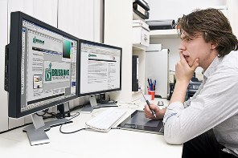

Секретар керівника (організації, підприємства)

Оператор комп'ютерного набору

Оператор комп'ютерної верстки

Оператор з обробки інформації та програмного забезпечення

Всі професії та спеціальності в училищі:
- Верстатник широкого профілю
- Оператор верстатів з програмним керуванням
- Секретар керівника (організації, підприємства, установи)
- Оператор комп’ютерного набору
- Оператор комп’ютерної верстки
- Електрогазозварник
- Газорізальник
- Електромонтер контактної мережі
- Слюсар з ремонту рухомого складу
- Тесляр
- Електромонтер з ремонту та обслуговування електроустаткування
- Столяр будівельний
- Оператор з обробки інформації та програмного забезпечення
- Помічник машиніста тепловоза
- Помічник машиніста електровоза
- Касир квитковий
- Провідник пасажирського вагона
- Оглядач вагонів
- Оглядач-ремонтник вагонів
- Складач поїздів
Запрошуємо на навчання!